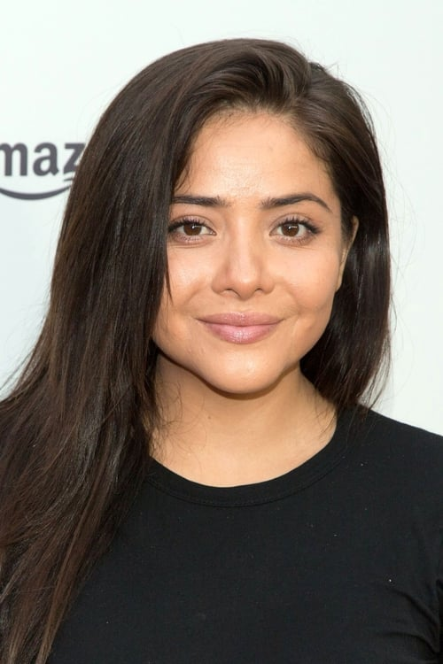
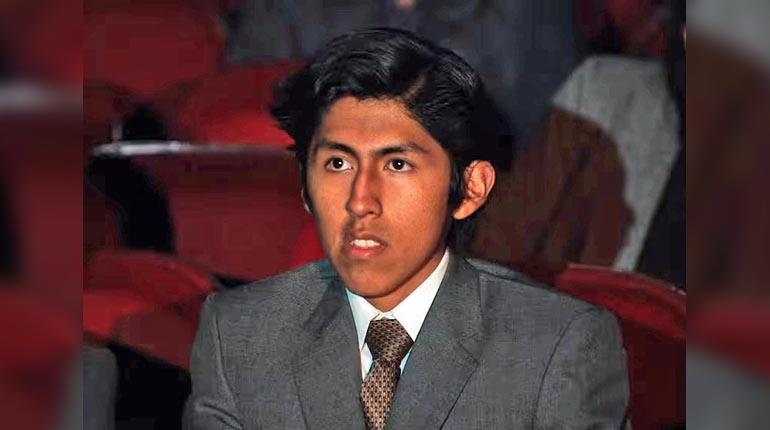

Martín, un huérfano que trabaja como lustrabotas, decide robar el perro de su mejor cliente, un solitario sastre al que ha comenzado a imaginar como su padre.
PAÍS: Bolivia, Chile, México, Francia, Ecuador, Italia
DRAMA – COLOR – 2024 – 90 min
Dirección: VINKO TOMIČIĆ SALINAS
Idioma original: español
Guion: Vinko Tomičić Salinas
Fotografía: Sergio Armstrong
Edición: Urzula Barba Höpfner
Sonido: Federico Moreira
Producción: Alvaro Manzano Zambrana, Gabriela Maire, Edher Campos, Vinko Tomičić Salinas, Matias de Bourguignon
Intérpretes:
Alfredo Castro
 Teresa Ruiz
 Franklin Aro
Wolframio Sinué
Julio César Altamirano, Ninón Dávalos
Público recomendado: apto para el público en general
2024 | Festival de Cine de Tribeca
2024 | Festival Internacional de Cine de Guadalajara
2024 | Santiago Festival Internacional de Cine
2024 | Festival de Cine de Giffoni
VINKO TOMIČIĆ SALINAS (CHILE)
Vinko Tomičić Salinas es un guionista, director y productor chileno. Su primer largometraje, codirigido con Francisco Hevia, “El Fumigador”, se estrenó en PÖFF Tallinn Black Nights y fue galardonado como Mejor Película Nacional en SANFIC 2016. Su primera película en solitario como director, “El ladrón de perros”, se desarrolló en la Residencia de Cinéfondation de Cannes y en el programa Venice Biennale College Cinema. La película se estrenó en el Festival de Cine de Tribeca 2024.
El ladrón de perros (2024)
Aicha (Cortometraje, 2018)
El fumigador (2016)
Durmiente (Cortometraje, 2014)